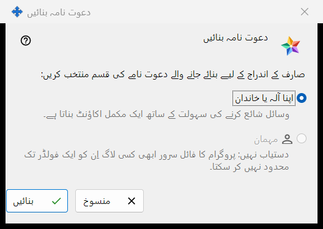
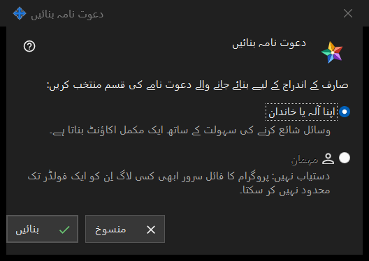

دعوت نامہ بنائیں
یہ کس مقصد کے لیے ہے
یہ چھوٹی ونڈو پوچھتی ہے کہ نیا دعوت نامہ کس قسم کا اکاؤنٹ بنائے گا۔ اسے ایکسچینج سرور کی ترتیبات کے گروپ دعوت نامے میں موجود بٹن دعوت نامہ بنائیں.. سے کھولیں؛ مینیجر کے سرور تک پہنچتے ہی یہ گروپ نظر آنے لگتا ہے۔


اس ترتیب میں
- ایکسچینج سرور کی ترتیبات میں گروپ دعوت نامے تلاش کریں اور بٹن دعوت نامہ بنائیں.. دبائیں۔
- اپنا آلہ یا خاندان کو منتخب رہنے دیں۔
- بنائیں دبائیں۔
- ونڈو دعوت نامہ بن گیا کھلتی ہے اور کوڈ صرف ایک بار دکھاتی ہے: اسے وہیں سے کاپی کریں۔ کچھ بنائے بغیر نکلنے کے لیے منسوخ دبائیں یا Esc دبائیں۔
عناصر
دعوت نامے کی قسم
ونڈو کا سوال صارف کے اندراج کے لیے بنائے جانے والے دعوت نامے کی قسم منتخب کریں: دو ریڈیو بٹن دیتا ہے۔ اپنا آلہ یا خاندان پہلے سے منتخب ہوتا ہے، اور اس کے نیچے کی سطر کہتی ہے: وسائل شائع کرنے کی سہولت کے ساتھ ایک مکمل اکاؤنٹ بناتا ہے۔ دعوت نامہ استعمال کرنے والا شخص اپنا لاگ اِن اور پاس ورڈ خود درج کرتا ہے۔
بنائیں
بٹن بنائیں سرور سے ایک بار استعمال ہونے والا دعوت نامہ مانگتا ہے۔ کامیابی پر کوڈ والی ونڈو کھلتی ہے اور ترتیبات کے صفحے پر یہ سطر نظر آتی ہے: دعوت نامہ کامیابی کے ساتھ بن گیا۔ اگر سرور انکار کرے تو وجہ صفحے پر ظاہر ہوتی ہے اور کوڈ والی ونڈو نہیں کھلتی۔ فہرست ہر دعوت نامہ قسم، بننے کے وقت، حالت اور ہیش کے ساتھ دکھاتی ہے، کوڈ کے ساتھ کبھی نہیں۔
دعوت نامہ واپس لینا
پہلے سے بنا ہوا دعوت نامہ منسوخ کرنے کے لیے اسے فہرست میں منتخب کریں اور بٹن دعوت نامہ واپس لیں دبائیں۔ تصدیق کے بعد اس کا کوڈ کام کرنا بند کر دیتا ہے۔
منسوخ
بٹن منسوخ یا Esc ونڈو بند کر دیتے ہیں اور کچھ نہیں بناتے۔
مینیجر کی ترتیبات · SFTP اشتراک کی ترتیبات · ایکسچینج سرور کی ترتیبات